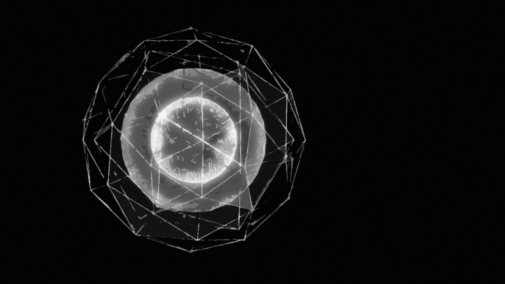

Life Zero...
-
2018
Houdini : 3h
"生きたい" という微かな希望から, 徐々に消えそうになっているなかで, どうにか自分の存在を示しているときは, どんな気分なんだろうか.
というテーマのもと, 制作しました.
様々な大きさ, 形, 模様の球体を何重にもなる階層に分けて, 制作しました. Photo shopで加工の練習のために, フィルターを利用してみました.
